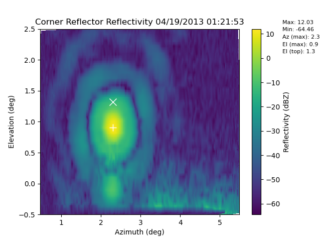

Note
Click here to download the full example code
Example on how to plot out a corner reflector raster¶
This example shows how to plot out a corner reflector raster scan which also analyzes the data and returns the corner reflector location information
Out:
{'max': 12.033388550952566, 'min': -64.46055859033906, 'az_max': 2.3055334360003474, 'el_max': 0.9046822742474916, 'el_top': 1.3160535117056857}
/Users/atheisen/Code/RadTraQ/examples/plot_corner_reflector_raster.py:25: UserWarning: Matplotlib is currently using agg, which is a non-GUI backend, so cannot show the figure.
plt.show()
import radtraq
import act
import matplotlib.pyplot as plt
# Read in sample data using ACT
f = radtraq.tests.sample_files.EXAMPLE_RASTER
obj = act.io.armfiles.read_netcdf(f)
# Process and plot raster file
data = radtraq.plotting.corner_reflector.plot_cr_raster(obj, target_range=478.,
el_limits=[-0.5, 2.5], noplot=False)
print(data)
plt.show()
obj.close()
Total running time of the script: ( 0 minutes 0.775 seconds)